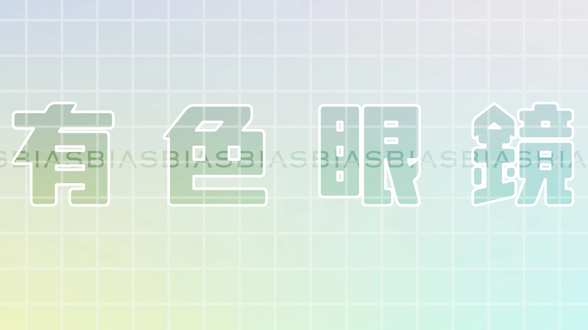
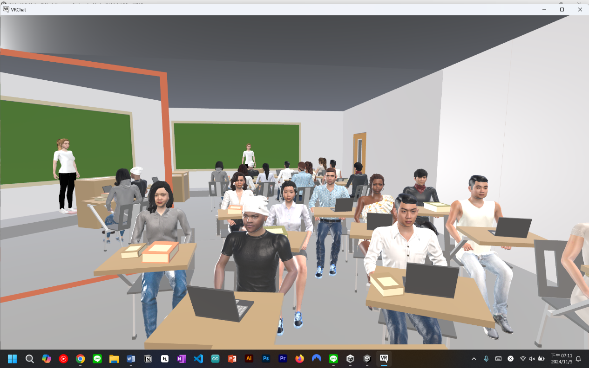

國立政治大學 數位內容碩士學位學程 ｜碩士畢業
2022/9 – 2025/2
2022/9 – 2025/2
2018/9 – 2022/6
2015/9 – 2018/6
2025/12 – 至今
學習金融核心系統需求分析與介面設計能力，能與客戶及開發團隊有效溝通、釐清需求、推進開發，擁有跨部門、國籍協作與專案溝通經驗。
目前已累積把將近十五個交易功能從訪談需求、設計畫面流程、撰寫技術規格文件、舉辦客戶說明會、與工程師協作開發，對客戶進行功能展示showcase，並推進部屬至客戶端。
2025/6 – 2025/9
學習Unity與C#技能，初步接觸遊戲企劃、遊戲美術、工程師與QA的協作流程，也最初開始探索自己較喜歡的工作取向。
2023/8 – 2024/6
協助VR研究計畫的實驗進行，並協助尋找、整合文獻資料。主要的研究計畫與虛擬實境、網頁媒體對於人的行為、認知、情緒之影響有關。
2023/2 – 2023/6
教學、協助學生實作Arduino實體裝置。
2021/3 – 2021/6
與設計師溝通、切版、RWD、JavaScript製作網頁。
2020/8 – 仍在職
利用自身擁有的程式能力，帶領孩子學習 scratch、App inventor、 Javascript、Python 等程式語言，亦擔任過暑期舉辦之麥塊程式營隊的講師。
系統分析師 · 2025/12 – 至今
以系統分析師身分參與新一代銀行服務平台導入專案，負責共用服務（Shared Services）團隊的業務需求分析與功能設計；並擔任使用者管理系統（UMS）導入的主要推動者，與客戶及跨國團隊協作，推動舊系統轉換與產品導入。
主要職責與成果
協助小隊員採購、挑選需要之電子零件。

《有色眼鏡》為第一人稱視角的虛擬實境體驗，玩家必須透過更換、尋找不同顏色的眼鏡解謎，體驗故事主角從幼年、壯年、老年的人生經歷，並從遊玩的過程中，體會主角一路走來慢慢放下偏見的成長歷程。

為了開發符合碩論實驗法的實驗場景，使用Unity中的VRChatSDK去製作場景以及虛擬角色。利用鏡子與身體動作同步觸發在虛擬場景中的普羅透斯效應（Proteus Effect），量測在不同國籍的虛擬化身中受試者的外語演講焦慮程度。

這是Hack Muffin黑客鬆的小組作品，使用Unity與C#製作的破關遊戲。